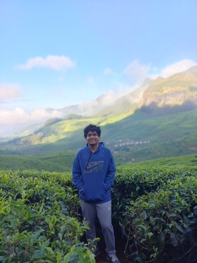
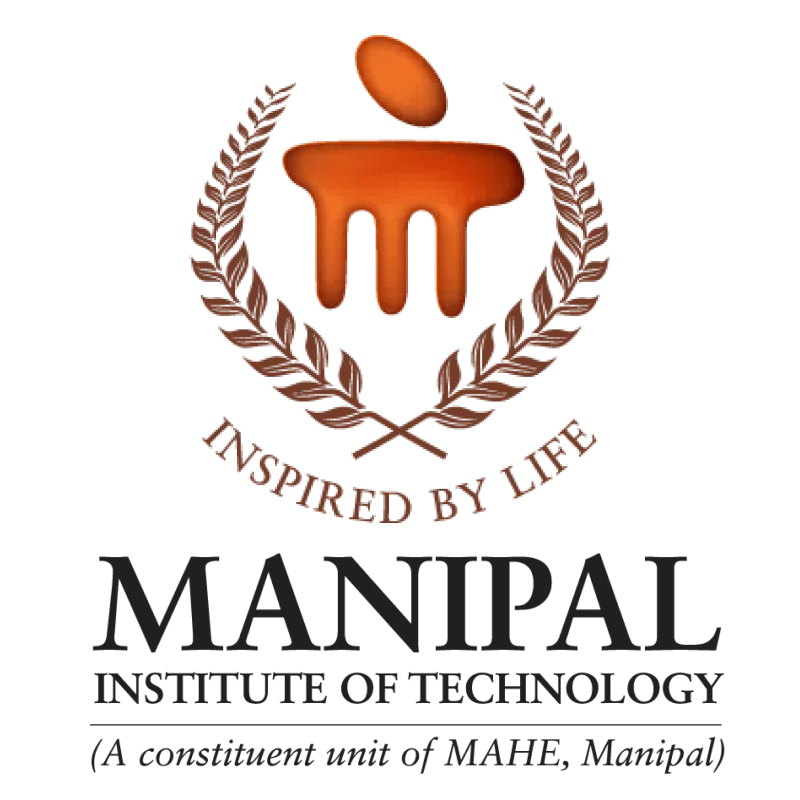

Kartik Ahluwalia
Currently building secure APIs.
Software Engineer at Rystad Energy, working on the security and observability layer of a production scenario-modelling platform. I care about systems that stay reliable under load and easy to debug when they don't — GraphQL authorization, rate limiting, and telemetry pipelines that turn incidents into a single query.
Backend-leaning, full-stack when it counts.
CS engineering graduate turned systems engineer, with a research streak that never quite left.

I'm a Computer Science Engineering graduate from the Manipal Institute of Technology (2022–2026), currently working as a Software Engineer on Rystad Energy's Global Solutions & Insights team in Bengaluru. My day-to-day sits at the intersection of backend security and observability — authorization, rate limiting, and the telemetry that tells you when something's actually wrong before a client does.
Before that, I spent two years shipping across the stack: a job board with role-based access at Amantya Technologies, customer segmentation models at Xebia, and two published research papers on applying deep learning to medical imaging and spam detection. I like problems that reward precision — the kind where a wrong assumption about auth or a missing index shows up in production, not in a demo.
Junior Software Engineer @ Rystad Energy · owns security & observability for Scenario Manager

Deploy log.
Four roles, most recent first — each one a step from "wrote the feature" to "own the system."
Junior Software Engineer
Rystad Energy · Bengaluru, India
- Own security and observability engineering for Scenario Manager, a client-facing scenario-modelling platform (.NET, GraphQL, Angular, Python, Kubernetes).
- Driving OpenTelemetry rollout across remaining Python model services and production cutover of the Kubernetes migration.
Software Engineering Intern
Rystad Energy · Bengaluru, India
- Delivered 30+ production tickets across .NET, Angular, and Python services over 6 months.
- Hardened the API boundary: role-based authorization on admin GraphQL operations, sliding-window rate limiting (100 req/60s, HTTP 429), and parametrised injection-prone SQL — pinned by CI tests.
- Built a centralised OpenTelemetry logging pipeline with dashboard-id correlation, cutting failed-run diagnosis from hours of manual log reading to a single query.
- Shipped a full-stack log admin feature (SQL Server → REST → Angular) and a Grafana metrics dashboard.
- Migrated the internal app governing 600+ dashboards from IIS to Kubernetes/Helm/ArgoCD — manual deployments became Git-versioned releases with one-commit rollback.
Trainee Engineer
Amantya Technologies · Gurgaon, India
- Built a high-performance job board using Next.js and PostgreSQL, optimizing queries via Prisma ORM to reduce search API latency by 40%.
- Implemented RBAC using NextAuth.js and GitHub OAuth, securing CRUD operations across multi-tenant user data.
Machine Learning Intern
Xebia · Gurgaon, India
- Built customer segmentation models using Scikit-learn (K-Means) on 50k+ records, improving marketing targeting accuracy by 30%.
Selected work.
Two published papers, one live app, one shipped extension, and a couple of models trained for the fun of it.
Breast Ultrasound Image Classification
Ensemble model (soft-voting) combining fine-tuned EfficientNetV2 and Vision Transformers for breast cancer classification — 91.1% accuracy, 0.91 weighted F1. Presented at the NQComp 2026 conference in Bangalore.
SMS Spam Detection
Optimized Random Forest classifier for SMS spam detection achieving a 98% F1-score. Published and presented at WCSE 2023, Singapore, winning Best Oral Presenter among international submissions.
VibeVerse Chat
Fault-tolerant real-time communication service built with Socket.IO and Node.js, handling concurrent message streams with minimal latency. Scalable MongoDB schema for chat history and user metadata, exposed via RESTful APIs.
YT Time Machine
Manifest V3 extension for filtered browsing of a YouTube channel's history by year range. Custom Vercel serverless proxy secures API keys and handles server-side auth while keeping the client lightweight.
Bit Predict
Deep learning models (LSTM, Conv1D) built with TensorFlow and Keras to forecast Bitcoin prices, achieving a mean absolute error of 615.5 on held-out data.
Twitter Sentiment Analysis
Classifier that tags tweet sentiment as positive, negative, or neutral, built on classic NLP preprocessing and scikit-learn models.
What I build with.
Grouped the way I'd group services on an architecture diagram.
Languages
Backend & Web
Infra & Observability
ML & Data
Databases
Tooling
Achievements & certifications.
- 01400+ problems solved across LeetCode, GFG, Codeforces, CodeChef
- 02MassMutual India Scholarship (ISACA, 2024)
- 03MIT Achiever Scholarship — Manipal Institute of Technology
- 04National Semi-Finalist — TATA Imagination Challenge (2024)
- 05ICPC 2024 Contestant — Asia Chennai Preliminary Contest
- 06HPAIR Asia Conference — Selected Delegate
- 07Duke of Edinburgh's Award — Gold, Silver & Bronze
- 08Vice Chair, IEEE CS Student Chapter (2023–2024)
- 09R&D Head, CyberSpace Club (2023–2024)
- 10Executive Member, ACM Student Chapter (2022–2023)